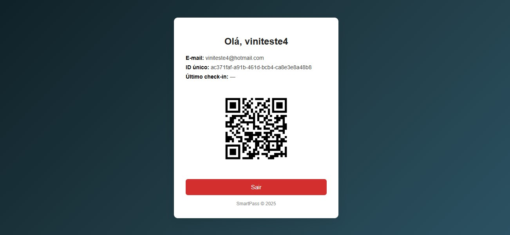

Aplicação web voltada para credenciamento e autenticação por QR Code, com foco em segurança, escalabilidade e organização de backend. Autenticação segura com hash de senha, Geração e gerenciamento de QR Codes únicos por usuário, Persistência de dados com banco relacional, Integração com serviço de envio de emails, Uso de variáveis de ambiente para segurança em produção e Deploy em ambiente cloud (produção ativa).
Protótipo:
